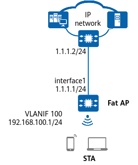

Example for Configuring a WPA2-PSK-AES Security Policy (Fat AP)
Networking Requirements
Without a proper security policy deployed, a WLAN may be exposed to security risks due to its openness. In this example, the customer does not require the WLAN to be highly secure, so no authentication server is required. Instead, a security policy with WPA/WPA2-PSK authentication can meet the customer's requirement. STAs on the network support WPA/WPA2 authentication and TKIP or AES encryption. For details about the basic networking example, see WLAN STA Management Configuration.


In this example, interface1 represents MultiGE0/0/0.
Table 1 provides an example of data planning.
Item |
Data |
|---|---|
Service VLAN for STAs |
VLAN 100 |
DHCP server |
Fat AP functioning as a DHCP server to assign IP addresses to STAs |
IP address pool for STAs |
VLANIF 100: 192.168.100.2–192.168.100.254/24 |
AP management information |
|
Regulatory domain profile |
|
SSID profile |
|
Security profile |
|
VAP profile |
|
Configuration Roadmap
- Configure STA access services so that STAs can access the WLAN properly.
- Configure a WPA2 security policy using PSK authentication and AES encryption in a security profile.
Procedure
- Create the security profile wlan-security and configure a WPA2-PSK-AES security policy in the profile.
<HUAWEI> system-view [HUAWEI] sysname FAT AP [FAT AP] wlan [FAT AP-wlan] security-profile name wlan-security [FAT AP-wlan-sec-prof-wlan-security] security wpa2 psk pass-phrase YsHsjx_202206 aes [FAT AP-wlan-sec-prof-wlan-security] quit
Create the SSID profile wlan-ssid and set the SSID name to wlan-net.
[FAT AP-wlan] ssid-profile name wlan-ssid [FAT AP-wlan-ssid-prof-wlan-ssid] ssid wlan-net [FAT AP-wlan-ssid-prof-wlan-ssid] quit
# Create the VAP profile wlan-vap, set the service VLAN, and bind the security profile and SSID profile to the VAP profile.
[FAT AP-wlan] vap-profile name wlan-vap [FAT AP-wlan-vap-prof-wlan-vap] service-vlan vlan-id 100 [FAT AP-wlan-vap-prof-wlan-vap] security-profile wlan-security [FAT AP-wlan-vap-prof-wlan-vap] ssid-profile wlan-ssid [FAT AP-wlan-vap-prof-wlan-vap] quit
# Bind the VAP profile wlan-vap to radios 0 and 1 of the AP with the ID of 0.
[FAT AP-wlan] ap-id 0 [FAT AP-wlan-ap-0] vap-profile wlan-vap wlan 1 radio 0 Warning: This operation will delete radio0's VAP in active state and make users offline, continue? [Y/N]:y [FAT AP-wlan-ap-0] vap-profile wlan-vap wlan 1 radio 1 Warning: This operation will delete radio1's VAP in active state and make users offline, continue? [Y/N]:y [FAT AP-wlan-ap-0] quit
Verifying the Configuration
# Run the display security-profile name wlan-security command to check information about the security profile.
[FAT AP-wlan]display security-profile name wlan-security ------------------------------------------------------------ Security policy : WPA2 PSK Encryption : AES PMF : disable ------------------------------------------------------------ WPA's configuration PTK update : disable PTK update interval(s) : 43200 Group key negotiation : enable ------------------------------------------------------------ WAPI's configuration PKI realm : - Authentication server IP : - WAI timeout(s) : 60 BK update interval(s) : 43200 BK lifetime threshold(%) : 70 USK update method : Time-based USK update interval(s) : 86400 MSK update method : Time-based MSK update interval(s) : 86400 Cert auth retrans count : 3 USK negotiate retrans count : 3 MSK negotiate retrans count : 3 ------------------------------------------------------------
# Run the display vap all command to check the VAP authentication mode based on the Auth type field.
# STAs can discover the WLAN with the SSID wlan-net and successfully access the WLAN after users enter the correct key.
Configuration Scripts
- FAT AP
# sysname FAT AP # wlan security-profile name wlan-security security wpa2 psk pass-phrase %+%##!!!!!!!!!"!!!!"!!!!*!!!!a4O4$.&PxR`C+|'x<+f;\@++YLf$\GG6&eI!!!!!2jp5!!!!!!<!!!!Wdv@E<P1Q*>zJ%Mg [mG1.z9mPeH6X~$&/WA!!!!!%+%# aes ssid-profile name wlan-ssid ssid wlan-net vap-profile name wlan-vap service-vlan vlan-id 100 ssid-profile wlan-ssid security-profile wlan-security ap-id 0 vap-profile wlan-vap wlan 1 radio 0 vap-profile wlan-vap wlan 1 radio 1 # return